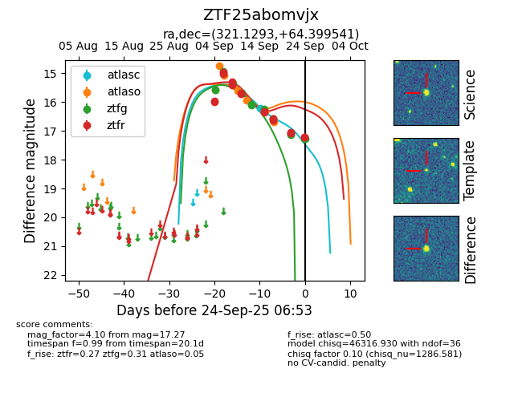
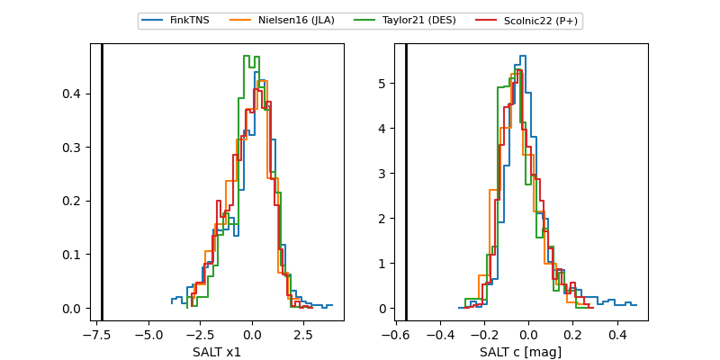

FINK: ZTF25abomvjx
Lasair: ZTF25abomvjx
ALeRCE: ZTF25abomvjx
ZTF25abomvjx (ztf,fink)
equatorial (ra, dec) = (321.1293,+64.39954)
galactic (l, b) = (102.7847,+9.96447)


last atlasc=16.23, atlaso=16.68, ztfg=17.27, ztfr=17.22
1 atlasc, 7 atlaso, 17 ztfg, 16 ztfr detections